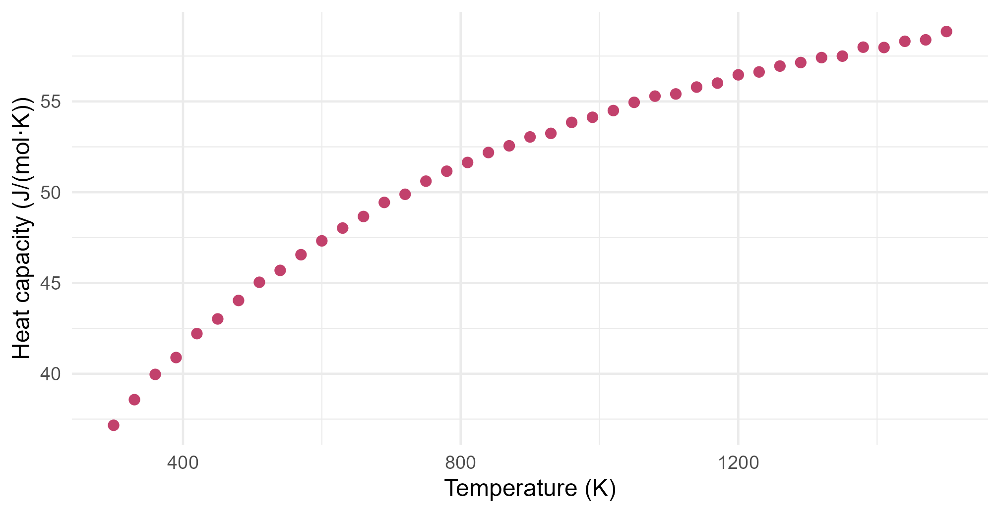

Module 4 · Lesson 2 of 14 Week 62 of 160 About 5–7 hours
Numbers inside the computer
Why 0.1 + 0.2 isn’t 0.3, and when it matters
See how R stores numbers as binary floating-point doubles, compare them with a tolerance, find the machine epsilon, avoid overflow and underflow by working on the log scale, recognize catastrophic cancellation in a variance formula, write a stable log-sum-exp, and see why ill-conditioned least-squares problems need the QR decomposition or rescaled predictors.
The plant’s new batch-control script adds catalyst in doses of 0.1 kg, and it’s supposed to stop when the total reaches 0.3 kg. Here’s its logic, with a safety limit of 10 doses:
total <- 0
doses <- 0
while (total != 0.3 && doses < 10) {
total <- total + 0.1
doses <- doses + 1
}
doses
#> [1] 10It never stopped at 0.3 kg. It added all 10 doses, a full kilogram of catalyst. The code looks right, and in ordinary arithmetic it is right. But the computer doesn’t do ordinary arithmetic:
0.1 + 0.2 == 0.3
#> [1] FALSEThis lesson is about how computers store numbers, and when that matters for statistics. Most of the time, it doesn’t. But when it does, the results can be silently, badly wrong, and every algorithm in this module has to be written with it in mind.
Computers are amazing at arithmetic… except when they’re not. Let’s peek inside the machine and see what a number really looks like!
In this lesson you’ll:
- see how R stores numbers, and why 0.1 can’t be stored exactly
- compare computed numbers with a tolerance, not with
== - find the machine epsilon, the limit of a number’s precision
- avoid overflow and underflow by working with logarithms
- spot catastrophic cancellation, and use a stable formula instead
- see why some least-squares problems are ill-conditioned, and how to fix them
Numbers in binary
R stores numbers as double-precision floating-point numbers, or doubles: in binary, with about 16 significant decimal digits. Some decimal fractions are exact in binary, such as 0.5 (one half) and 0.375 (three eighths). Most aren’t. In binary, one tenth is the never-ending fraction 0.000110011001100…, just as one third is 0.333… in decimal. The computer cuts it off after 53 binary digits, so 0.1 is stored as the nearest double, a tiny bit too big. Ask R for 20 digits and you can see it:
print(0.1, digits = 20)
#> [1] 0.10000000000000000555
print(0.1 + 0.2, digits = 20)
#> [1] 0.30000000000000004441
print(0.3, digits = 20)
#> [1] 0.2999999999999999889The errors in 0.1 and 0.2 add up, and their sum lands on a different double from the one nearest 0.3. The difference is 5.6 \times 10^{-17}, but == asks for exact equality, so it says FALSE.
The fix is to compare with a tolerance: two computed numbers are “equal” if they’re closer than some small amount. abs(x - y) < 1e-9 does that, and so does isTRUE(all.equal(x, y)), whose default tolerance is 1.5 \times 10^{-8} in relative terms.
Your turn. Fix the batch-control loop: make it stop when the total is within 10^{-9} kg of 0.3.
The tolerance is 1e-9.
total <- 0
doses <- 0
while (abs(total - 0.3) > 1e-9 && doses < 10) {
total <- total + 0.1
doses <- doses + 1
}
dosesThree doses, as intended. After three doses, total is 0.30000000000000004, which is within 10^{-9} of 0.3, so the loop stops. The rule: never test computed doubles with ==. Integers that came from counting are fine, and so are numbers you typed in and never calculated with.
How precise is a double?
A double has 53 binary digits of precision. So the gap between 1 and the next double above it is 2^{-52} \approx 2.2 \times 10^{-16}. That’s the machine epsilon: add anything much smaller than it to 1, and you get 1 back. In relative terms, every double is stored with an error of at most half of it, which is about 16 significant digits.
The gap between neighboring doubles grows with their size. Near 1, doubles are 2.2 \times 10^{-16} apart. Near a billion, they’re 1.2 \times 10^{-7} apart. Near 10^{18}, they’re 128 apart: between 10^{18} and 10^{18} + 128, there’s no other double at all.
x <- c(1, 1000, 1e9, 1e16, 1e18)
data.frame(x = x, gap_to_next_double = 2^(floor(log2(x)) - 52))
#> x gap_to_next_double
#> 1 1e+00 2.220446e-16
#> 2 1e+03 1.136868e-13
#> 3 1e+09 1.192093e-07
#> 4 1e+16 2.000000e+00
#> 5 1e+18 1.280000e+02Integers are exact up to 2^{53} \approx 9 \times 10^{15}. Beyond that, there are gaps:
2^53 + 1 == 2^53
#> [1] TRUE
NoteGo deeper: what’s inside a double
A double is 64 bits: 1 for the sign, 11 for the exponent, and 52 for the fraction. It stands for
(-1)^{\text{sign}} \times 1.f \times 2^{\,e - 1023},
where 1.f is a binary number between 1 and 2 (the leading 1 isn’t stored, which gives 53 digits of precision from 52 bits), and e is the exponent, from 1 to 2046. That gives a range from about 2.2 \times 10^{-308} to 1.8 \times 10^{308}: R reports them as .Machine$double.xmin and .Machine$double.xmax. The two exponents left over are used for zero, Inf, NaN, and some extra-tiny “subnormal” numbers. The standard that defines all this is IEEE 754, and nearly every computer since the 1980s follows it.
Your turn. Find the machine epsilon yourself: start with e <- 1, and keep halving it while adding e / 2 to 1 still changes it.
Stop when 1 + e / 2 equals 1.
e <- 1
for (k in 1:100) {
if (1 + e / 2 == 1) break # stop when adding e/2 no longer changes 1
e <- e / 2
}
c(e = e, machine_eps = .Machine$double.eps)After 52 halvings, e = 2^{-52} = 2.2 \times 10^{-16}, exactly R’s .Machine$double.eps. (This is one of the few places where == is the right test: you want to know whether the result is exactly 1.)
Too big and too small
Doubles stop at about 1.8 \times 10^{308}. Anything bigger overflows to Inf. At the other end, numbers smaller than about 10^{-308} lose precision, and below 5 \times 10^{-324} they underflow to 0:
factorial(170)
#> [1] 7.257416e+306
factorial(171)
#> [1] Inf
1e-320
#> [1] 9.999889e-321
5e-324 / 2
#> [1] 0Overflow and underflow are common in statistics, because probabilities of whole datasets are tiny. Lesson 3 will test random number generators, and one simple test counts the ones in 2,000 random bits. The probability of exactly 1,000 ones is the binomial probability
\binom{2000}{1000} \, 0.5^{1000} \, (1 - 0.5)^{1000}.
The binomial coefficient is about 10^{600}, which overflows, and 0.5^{2000} underflows to 0. The formula, typed as written, gives \infty \times 0, which is NaN (not a number). The cure is to work with logarithms: \log \binom{2000}{1000} \approx 1382 is no problem at all, and lchoose() computes it directly.
Your turn. Compute the probability on the log scale, and then take the exponential.
Each of the 2,000 bits contributes a factor of 0.5: log(0.5).
choose(2000, 1000) * 0.5^2000 # as written: Inf times 0
exp(lchoose(2000, 1000) + 2000 * log(0.5))0.0178, a perfectly ordinary number made from two numbers that a double can’t hold. It’s what dbinom(1000, 2000, 0.5) gives: R’s distribution functions are written to avoid overflow and underflow, and most have a log = TRUE argument that gives you the logarithm directly.
Subtracting nearly equal numbers
Each double carries about 16 significant digits. When you subtract two numbers that agree in their first 14 digits, only 2 meaningful digits are left, and the rounding errors, which were in the 16th digit, are now in the 2nd. This is catastrophic cancellation, and it’s the most common way that a correct formula gives a wrong answer.
The lab checks its balance every morning with a 1 kg reference weight. The balance reads in micrograms, so a reading is about a billion: 10^9 µg. Here are 20 mornings:
print(w, digits = 12)
#> [1] 999999999 1000000004 1000000017 999999997 1000000018 1000000001
#> [7] 1000000006 1000000015 999999999 1000000004 1000000004 1000000003
#> [13] 999999999 1000000011 999999997 1000000010 1000000010 1000000006
#> [19] 1000000012 1000000003Many textbooks give a “computational formula” for the variance, which needs only one pass through the data:
s^2 = \frac{\sum x_i^2 - n \bar{x}^2}{n - 1}.
It’s exact in ordinary arithmetic. But here, \sum x_i^2 and n\bar{x}^2 are both about 2 \times 10^{19}, where doubles are 4,096 apart, and their difference is about 800. All the digits that matter are lost in the subtraction. The two-pass formula subtracts the mean first, from each reading, and then squares numbers of about 10:
s^2 = \frac{\sum (x_i - \bar{x})^2}{n - 1}.
Your turn. Compute the variance of the readings both ways, and compare them with var().
Subtract the mean first: w - mean(w).
n <- length(w)
one_pass <- (sum(w^2) - n * mean(w)^2) / (n - 1)
two_pass <- sum((w - mean(w))^2) / (n - 1)
c(one_pass = one_pass, two_pass = two_pass, var = var(w))The two-pass formula gives 42.2 µg², an SD of 6.5 µg, just like var(). The one-pass formula gives nonsense, probably 0 or a multiple of about 200 (the exact nonsense depends on the computer). A variance of 0 would say the balance is perfect, and a negative one is impossible. Nothing warns you: the formula just quietly returns the wrong number.
Another fix is to shift the data before you start: subtract a round number near the mean, such as 10^9, which changes nothing about the variance. Stable algorithms are designed so that they never subtract big, nearly equal numbers. Challenge 1 builds one that works even when the readings arrive one at a time.
Working on the log scale
The likelihood of a dataset is a product of densities, one for each observation (Lesson 9 will maximize likelihoods). With a thousand observations, the product underflows, even though every density is a reasonable number:
set.seed(4022)
x <- rnorm(1000, 185, 1.5)
prod(dnorm(x, 185, 1.5))
#> [1] 0
sum(dnorm(x, 185, 1.5, log = TRUE))
#> [1] -1792.041So statisticians work with the log-likelihood, a sum of logs, which is no trouble at all. That raises a new problem: sometimes you need to add probabilities that you’ve stored as logs. For example, a mixture model (Lesson 10) adds up the probability of an observation under each group. If a_1 and a_2 are log-probabilities, you want \log(e^{a_1} + e^{a_2}). With a = -1000 and -1001, both exponentials underflow to 0, and the log of 0 is -\infty.
The trick is to factor out the biggest term. With m = \max_i a_i,
\log \sum_i e^{a_i} = m + \log \sum_i e^{a_i - m}.
Now the biggest exponential is e^0 = 1, and none of them can overflow. Any that underflow were too small to matter anyway. It’s called the log-sum-exp trick.
Your turn. Write the function.
Subtract the maximum, m, before taking the exponentials.
logsumexp <- function(a) {
m <- max(a)
m + log(sum(exp(a - m)))
}
log(sum(exp(c(-1000, -1001)))) # the direct way
logsumexp(c(-1000, -1001))The direct way gives -Inf. The trick gives −999.687, which is right: -1000 + \log(1 + e^{-1}) = -1000 + 0.313. It works for big numbers too, where the direct way overflows: logsumexp(c(800, 801)) is 801.313.
Ill-conditioned problems
Some problems magnify rounding errors, however carefully you compute. Here’s the heat capacity of carbon dioxide gas, measured from 300 to 1500 K:
ggplot(hc, aes(x = T_K, y = cp_J_molK)) +
geom_point(color = "#C2416C", size = 2) +
labs(x = "Temperature (K)", y = "Heat capacity (J/(mol·K))") +
theme_minimal(base_size = 12)
Engineers fit curves like this with a polynomial, c_p = \beta_0 + \beta_1 T + \beta_2 T^2 + \beta_3 T^3. As a regression, its model matrix X has columns 1, T, T^2 and T^3, and Lesson 2.4 gave the least-squares estimates as the solution of the normal equations, X^\top X \boldsymbol\beta = X^\top \mathbf{y}. Solve them directly, and R refuses:
X <- cbind(1, hc$T_K, hc$T_K^2, hc$T_K^3)
tryCatch(solve(crossprod(X), crossprod(X, hc$cp_J_molK)), error = function(e) conditionMessage(e))
#> [1] "system is computationally singular: reciprocal condition number = 1.7397e-21"The columns are wildly different in size: 1, about a thousand, a million, a billion. And over this range, T^2 and T^3 are almost perfectly correlated (0.99), so the problem is almost singular. The condition number measures how much a problem can magnify errors. A condition number of 10^k can cost you about k of your 16 digits. kappa() computes it.
Your turn. Compute the condition numbers of X and of X^\top X.
crossprod(X) computes X^\top X.
X <- cbind(1, hc$T_K, hc$T_K^2, hc$T_K^3)
c(X = kappa(X, exact = TRUE), XtX = kappa(crossprod(X), exact = TRUE))X has a condition number of 2.4 \times 10^{10}, which would cost about 10 digits. X^\top X has 5.7 \times 10^{20}, exactly the square: more than all 16 digits. That’s why solve() gave up. Forming X^\top X squares the condition number, and that’s the trouble with the normal equations.
lm() fits the same model without complaint, because it never forms X^\top X. It uses the QR decomposition of X itself, which only meets X’s condition number. That’s why statistical software uses QR, and why you should use lm() (or qr.solve()) rather than coding the textbook formula (X^\top X)^{-1}X^\top \mathbf{y} directly.
The other fix is to rescale the predictor. Centering and scaling the temperature to t = (T - 900)/600, which runs from −1 to 1, makes the columns similar in size and far less alike.
Your turn. Rescale the temperature, check the new condition number, and solve the normal equations.
The middle of the range, 300 to 1500 K, is 900.
t <- (hc$T_K - 900) / 600 # from -1 to 1
Xs <- cbind(1, t, t^2, t^3)
kappa(Xs, exact = TRUE)
b <- solve(crossprod(Xs), crossprod(Xs, hc$cp_J_molK))
drop(b)The condition number drops from 2.4 \times 10^{10} to 7.8, and even the normal equations now work. The coefficients are for t, not T, so they look different, but the fitted curve is the same: both predict 54.33 J/(mol·K) at 1000 K. poly(), which Lesson 2.9 mentioned, goes one step further: it builds columns that are exactly uncorrelated with each other.
Challenge round
Challenge 1 · One reading at a time. The historian of Lesson 1 sends readings one at a time, and there may be too many to store. Welford’s algorithm updates the mean and the variance with each new reading, without ever subtracting big, nearly equal numbers. After reading x_n, with d = x_n - m_{n-1}:
m_n = m_{n-1} + \frac{d}{n}, \qquad S_n = S_{n-1} + d\,(x_n - m_n),
and the variance is S_n/(n-1). Complete the function, and try it on the balance readings.
The second factor uses the updated mean: xi - m.
welford <- function(x) {
n <- 0; m <- 0; S <- 0
for (xi in x) {
n <- n + 1
d <- xi - m
m <- m + d / n
S <- S + d * (xi - m)
}
c(mean = m, var = S / (n - 1))
}
welford(w)The variance is 42.2 µg², the same as var() to ten digits, in one pass. Each step only multiplies small differences, of about 10 µg, so nothing cancels. It’s the algorithm inside many data loggers and streaming systems.
Challenge 2 · Posterior probabilities. In Lesson 3.13, discriminant analysis turned each group’s likelihood into a posterior probability: each likelihood divided by their sum (with equal priors). For a large sample, the log-likelihoods might be −1520.3, −1522.8 and −1530.1. Every likelihood underflows to 0, and 0/0 is NaN. Compute the probabilities with your log-sum-exp.
Divide by the sum on the log scale: subtract logsumexp(loglik).
logsumexp <- function(a) {
m <- max(a)
m + log(sum(exp(a - m)))
}
loglik <- c(Fizzwell = -1520.3, Kestrel = -1522.8, `Plum Valley` = -1530.1)
exp(loglik) / sum(exp(loglik)) # 0 / 0
exp(loglik - logsumexp(loglik))0.924, 0.076 and 0.00005. Only the differences between the log-likelihoods matter: Kestrel is 2.5 log units behind Fizzwell, so it’s e^{-2.5} = 0.08 times as likely. Classification software computes its probabilities this way.
Quick quiz
1. Why is 0.1 + 0.2 == 0.3 false in R?
In binary, one tenth is a never-ending fraction, like one third in decimal.
2. How should you check whether two computed numbers are equal?
Rounding can fail too, when the two numbers fall on either side of a rounding boundary.
3. About how many significant decimal digits does a double carry?
53 binary digits, which is about 16 decimal digits. The machine epsilon is 2^{-52} \approx 2.2 \times 10^{-16}.
4. Why does the one-pass formula \left(\sum x_i^2 - n\bar{x}^2\right)/(n-1) fail for the balance readings?
That’s catastrophic cancellation. Subtracting the mean first keeps the numbers small.
5. Why do statisticians maximize the log-likelihood instead of the likelihood?
The log is increasing, so both have their maximum in the same place. Only the log is safe to compute.
6. Why does lm() work where solve(t(X) %*% X, t(X) %*% y) fails?
Squaring a condition number of 10^{10} gives 10^{20}, which is beyond what 16 digits can handle.
Wrap-up
You can now see the machine’s numbers for what they are. Here’s what you’ve learned:
- Doubles store numbers in binary, with 53 binary digits: about 16 decimal digits. Most decimal fractions, such as 0.1, are stored with a tiny error.
- Compare with a tolerance, never with
==, or a loop that waits for 0.3 kg adds a whole kilogram. - The machine epsilon, 2^{-52} \approx 2.2 \times 10^{-16}, is the relative precision of a double. The gaps between doubles grow with their size.
- Overflow and underflow: doubles run from about 10^{-308} to 10^{308}. Work with logarithms:
lchoose(),log = TRUE, log-likelihoods, and the log-sum-exp trick. - Catastrophic cancellation: subtracting nearly equal numbers loses digits. The two-pass variance, shifted data and Welford’s algorithm avoid it.
- Ill-conditioning: a condition number of 10^k can cost k digits. X^\top X squares it, so use
lm()or the QR decomposition, and rescale predictors.
TipPractice in RStudio (optional, about an hour)
Download heat_capacity.csv into your project’s data-raw/ folder.
- Where do the digits go? For x = 10^k with k = 1, 2, \dots, 16, compute
(x + 0.1) - x. How close to 0.1 is the answer, and when does it go badly wrong? Explain it with the gaps between doubles. - A sum that depends on the order. Compute
sum(1 / (1:1e6))andsum(1 / (1e6:1)), and print both with 20 digits. Are they the same? Then trycumsum()and take the last element. Adding the small numbers first is usually more accurate. Why? - The quadratic formula. The roots of x^2 - 10^8 x + 1 = 0 are about 10^8 and 10^{-8}. Compute the small one with the usual formula, (b - \sqrt{b^2 - 4c})/2 with b = 10^8, and then with the stable form, 2c/(b + \sqrt{b^2 - 4c}). Which is right, and why?
- Polynomial fits. Fit the heat capacity with
lm(cp_J_molK ~ poly(T_K, 3))and withlm(cp_J_molK ~ T_K + I(T_K^2) + I(T_K^3)). Compare the fitted values and the condition numbers of the two model matrices (model.matrix()). Then try degree 6 with raw powers: what doeslm()do?
NoteKey words from this lesson
- Floating-point number
- A number stored as a sign, a fraction and an exponent, like scientific notation in binary. R’s doubles use 64 bits.
- Machine epsilon
- The gap between 1 and the next larger double, 2^{-52} \approx 2.2 \times 10^{-16}: the relative precision of a double.
- Overflow and underflow
-
A result too big for a double becomes
Inf(overflow), and one too small becomes 0 (underflow). - Catastrophic cancellation
- The loss of significant digits when two nearly equal numbers are subtracted.
- Log-sum-exp
- Computing \log \sum e^{a_i} as m + \log \sum e^{a_i - m}, with m the largest a_i, so that nothing overflows or underflows.
- Condition number
- A measure of how much a problem can magnify small errors. A condition number of 10^k can cost about k significant digits.
- QR decomposition
- Writing a matrix as an orthogonal matrix times a triangular one. Least squares by QR avoids forming X^\top X.
NoteWant to read more?
- The R FAQ, question 7.31, “Why doesn’t R think these numbers are equal?”. The short official answer, with links.
- Patrick Burns, The R Inferno, circle 1, “Falling into the floating point trap”. The same traps, told with humor.
- David Goldberg, “What every computer scientist should know about floating-point arithmetic” (1991). The classic paper: rounding, cancellation and the IEEE standard, in depth.